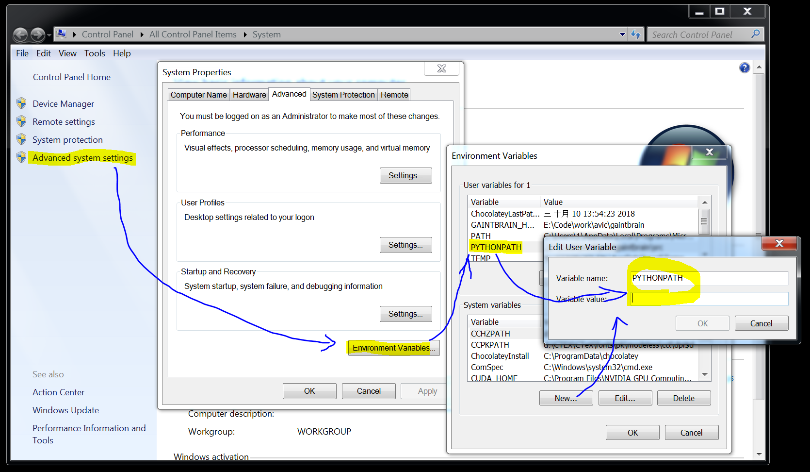

模块
Table of Contents
1 定义模块
定义模块就像正常编写普通 Python 的代码一样，在相应文件中定义一些函数。
# fibo.py # Fibonacci numbers module def fib(n): # write Fibonacci series up to n a, b = 0, 1 while a < n: print(a, end=' ') a, b = b, a+b print() def fib2(n): # return Fibonacci series up to n result = [] a, b = 0, 1 while a < n: result.append(a) a, b = b, a+b return result
然后通过 import 关键字导入模块
import fibo fibo.fib(1000) fibo.fib2(100) # or from fibo import fib, fib2 import fibo as fib from fibo import fib as fibonacci
1.1 定义系统的公用的模块
环境变量 PYTHONPATH 记录了系统中所有模块的路径。 Windows 操作系统可以通过下面
示意图中的步骤进行设置。

Unix 系列的系统直接在 shell 的配置文件中添加即可
export PYTHONPATH=your/python/module/path:$PYTHONPATH
1.2 包的组织结构
包也是一种模块，在每一级的文件夹下需要新建 __init__.py 文件初始化当前的包。下
面是一个包的文件结构的例子。
sound/ Top-level package
__init__.py Initialize the sound package
formats/ Subpackage for file format conversions
__init__.py
wavread.py
wavwrite.py
aiffread.py
aiffwrite.py
auread.py
auwrite.py
...
effects/ Subpackage for sound effects
__init__.py
echo.py
surround.py
reverse.py
...
filters/ Subpackage for filters
__init__.py
equalizer.py
vocoder.py
karaoke.py
...
当包创建并且添加到 PYTHONPATH 中后，可以通过如下方式导入包
import sound.effects.echo from sound.effects import echo from sound.effects.echo import echofilter